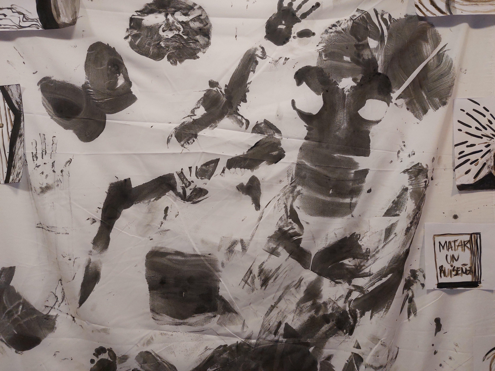

ESTIRARSE
Performance de la clase dibujo V, hablaba de como algo que te puede ayudar(la sábana) tambien te puede hacer daño(al estirarse se hace fricción en el cuerpo).
Año 2025
PLASMADO
Impresión del cuerpo con acrilico, agua y jabón sobre tela de 1.20x1.20.
Año 2025MASCARA
Cortometraje surrealista que explora la identidad a través del uso de máscaras y símbolos visuales.
Año 2025
CARNES ROJAS
Cortometraje surrealista que explora lo carnal de las sensaciones humanas.
Año 2025